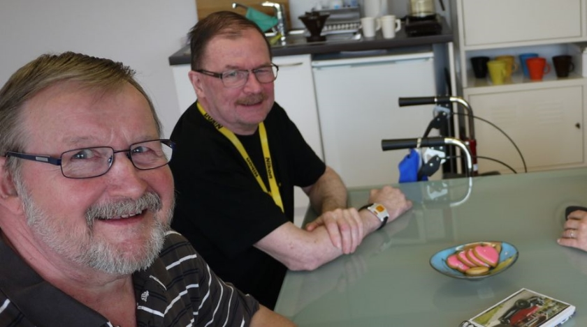
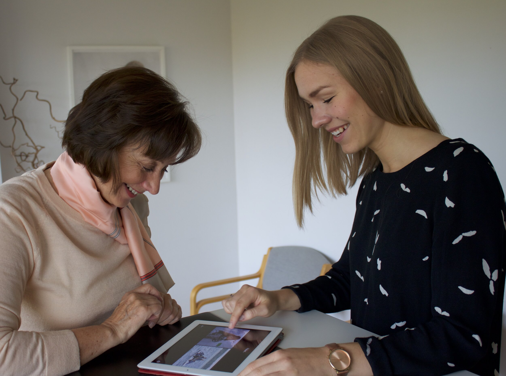
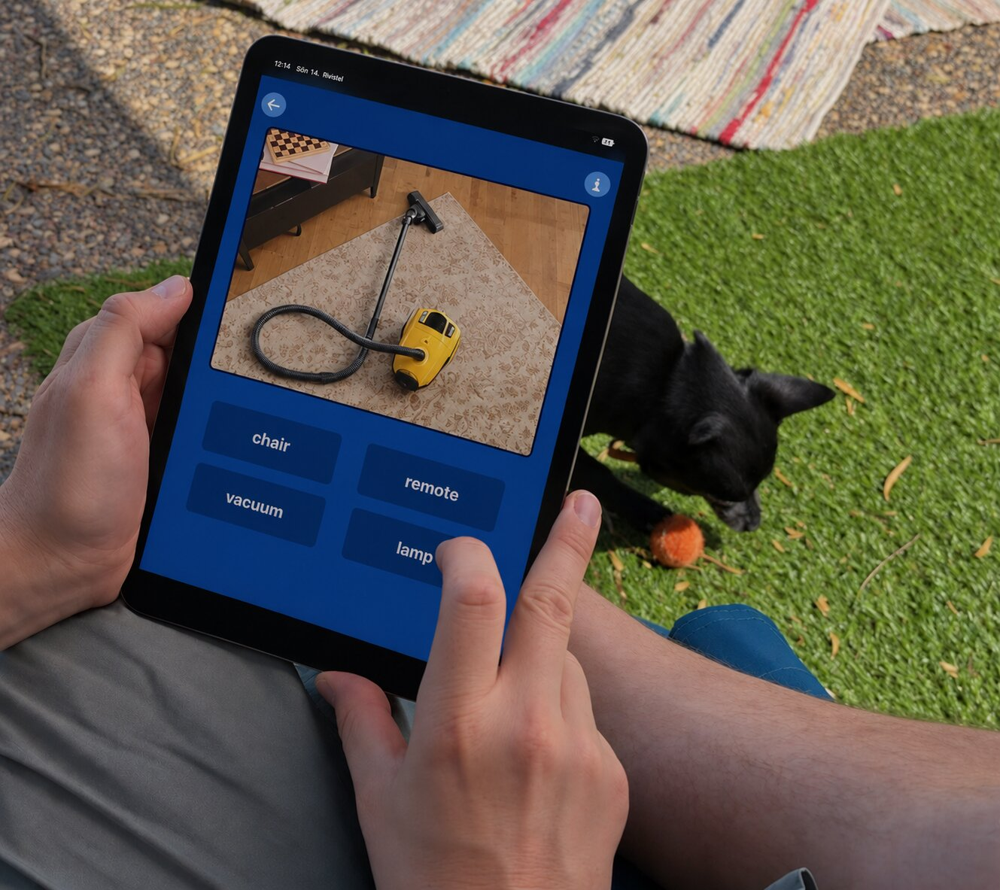

Teknologi som stöd för talterapi
Sanapsis-familjen består av två separata appar som stöder talterapiövning på olika sätt.
För talterapeuter
SanapsisPro
SanapsisPro är gjord för talterapeuter. Den gör din iPad till ett flexibelt och mångsidigt bibliotek med idéer och material för terapin.

Läs mer om SanapsisPro För hemövning Sanapsis+ Söker du ett sätt att träna tal och kommunikation hemma? Då är Sanapsis+ gjord för dig.
Läs mer om Sanapsis+